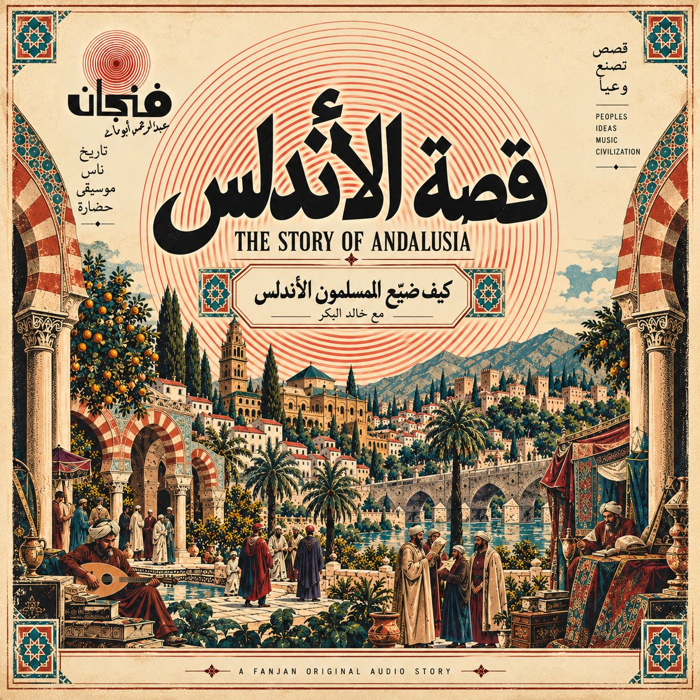
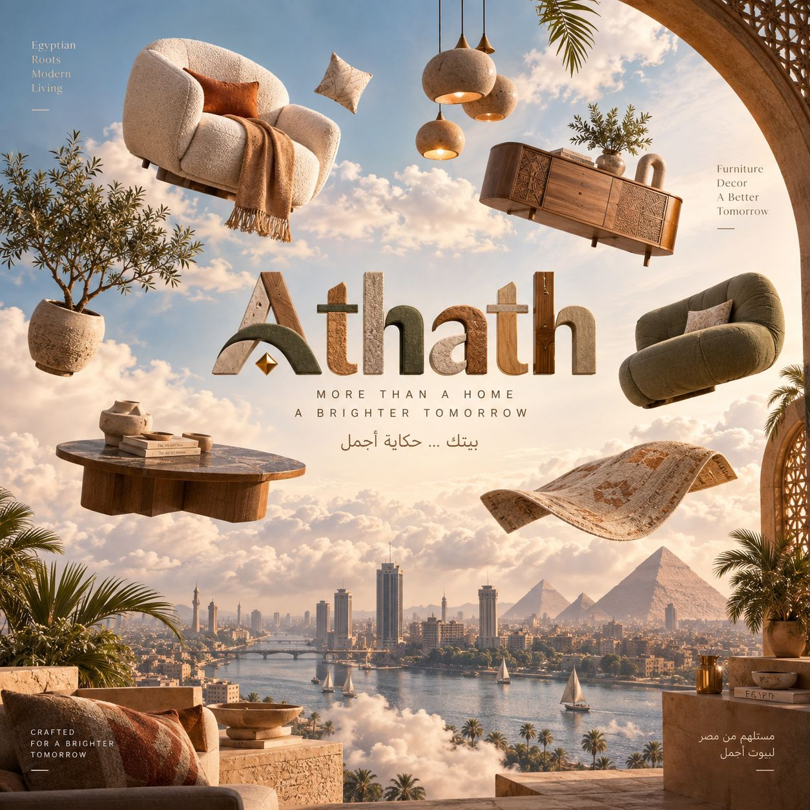

Research
Evaluate models, tools, references, and possibilities.
IBN MAJDI / ALEXANDRIA, EGYPT
A systems-minded creator working across generative AI, visual research, content production, and the practical workflows that connect them.
A CLOSER LOOK ↓
AI video, film visual development, and independent visual experiments.



BRAND VISUALSAI FILMSEXPERIMENTS
THE METHOD
AI content creator & visual researcher
years across operations & service
research, creation & workflow design
ACROSS CONTEXTS
THE PROCESS
Structured workflows that bring research, prompting, visual concepts, and production into a usable sequence.
Evaluate models, tools, references, and possibilities.
Build advanced prompting methodologies for exploration.
Shape visual concepts, assets, and content systems.
THE PRACTICE

THE FOUNDATION
I began in production and supermarket operations, then moved through retail, documentation, hospitality, sales, and customer experience. Each stage made the next one more legible: how people work, how information moves, and how a better system can make both clearer.
Today, that accumulated perspective informs an independent practice in generative AI, visual research, and creative workflow design.
The full record ↗LET'S BUILD SOMETHING TOGETHER
Open to consulting, research, creative partnerships, and AI projects where thoughtful process matters.